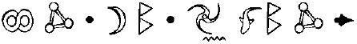

ARTEMİS F0WL’UN GÜNLÜĞÜ. DİSK 1. KODLANMIŞTIR.
Bir günlük tutmaya karar verdim. Hatta, bu fikrin daha önce aklıma gelmemiş olmasına şaşırdım. Benim gibi bir akılın, gelecek Fowl kuşakları harika fikirlerimden faydalanabilsin diye kayıtlarının tutulması gerekir.
Tabii ki böyle bir dokümana dikkat etmem lazım. Torunlarıma faydalı olurken, ölümüne aleyhimde delil bulmaya çalışan kanun güçlerinin işine daha çok yarayabilir.
Hatta bu günlüğü babamdan gizlemem daha da önemli. Rusya’dan kaçtığından beri kendinde değil. Kafasını asalet ve kahramanlığa takmış. En soyut kavramlar. Bildiğim kadarıyla dünyanın büyük bankalarının hiçbirinde asalet ve kahramanlık geçmiyor. Ailenin serveti benim ellerimde ve her zaman olduğu gibi ustaca yapılmış gizli planlarla onu koruyacağım. Bu gizli planların çoğu illegal olacak. En iyiler her zaman öyledir. Gerçek kâr kanunun ötesindeki karanlık bölgelerde yatar.
Bununla beraber, anne ve babamın değerlerine saygı duyduğum için kurban seçiminde kendi ölçümü değiştirmeye karar verdim. Birkaç dünya çapında şirketin iflas etmesi yeryüzünün ekolojisi için daha iyiymiş gibi görünüyor. Bu yüzden onlara bu konuda yardımcı olmaya karar verdim. Bunlar kurbansız suçlar değillerdi ama yaralananların ardından pek fazla gözyaşı dökülmeyecek. Bu zayıfladığım manasına gelmiyor, modern Robin Hood. Ondan çok daha ötede. Suçlarımdan büyük karlar elde etmeye niyetliyim.
Tek değişen babam değil. Kâhya neredeyse bir gecede yaşlandı. Görünüşü her zamanki gibi aynı ama bunu saklamak için ne yaparsa yapsın oldukça yavaşladı. O her zaman için sadık bir hizmetkardı ve haber alma konularındaki uzmanlığı çok değerli olacak. Gerçek koruma gerektiğinde belki Juliet bana eşlik edebilir ama artık özel koruma dalında bir hayatın ona uygun olmadığını iddia ediyor. Gelecek hafta bir pankreas takımında denenmek için Birleşik Devletlere gidiyor. Göründüğü kadarıyla minder ismi olarak “Yeşim Prenses”i seçmiş. Denemede başarısız olmasından başka bir şey ummuyorum. Ama öyle olacağından da şüpheliyim. Ne de olsa o bir Kâhya.
Tabii ki bir korumanın yardımı olmadan da üzerinde çalışabileceğim, halen süren tehlikeli girişimlerim var. Son yıllarda çeşitli banka hesaplarından kendiminkine para transfer eden bir yazılım geliştirdim. Bu yazılımın, bilgisayar suç dünyasından önde kalabilmek için geliştirilmesi gerekiyor. 2.0 versiyonu altı ay içinde devreye girecek. Sonra benim sanat sahtekarlığı yeteneğim var. Geçmişte en çok Empresyonizmden hoşlanırdım ama her nedense daha fantastik konulara doğru çekildim, mesela Pascal Herve’nin Büyülü Dünya serisindeki peri yaratıkları gibi. Ama bu projenin geçici olarak askıya alınması gerekiyor çünkü bugün bir komplonun kurbanı olduğumu keşfettim.
Bugün tuhaf bir şekilde başladı. Uyandığımda anlık bir zayıflık hissettim. Gözlerimi açmadan tam önceki an kendimden memnundum, servet toplama arzum unutulmuştu. Bu daha önce hiç olmamıştı. Belki de havam büyülü bir rüyadan kalmaydı ya da belki babamın yeni oluşan olumlu tavrı bulaşıcıydı. Neden her ne ise, gelecekte bunun gibi hatalar olmaması için dikkat etmeliyim. Babamın şu andaki bakış açısıyla, kararlılığımı kaybetme zamanı değil. Her zamanki gibi arzulu kalmalıyım. Fowllar için ileri gitmenin tek yolu suçtur, aurum potestas est.
Birkaç dakika sonra, daha büyük bir giz kendini gösterdi. Lavaboda yüzümü yıkarken, küçük bir nesne gözlerimden birinden düştü. Laboratuvarda yaptığım inceleme sonunda onun yarı-paslanmış boyalı bir kontak lense olduğu ortaya çıktı. Sadece bu kadar da değil, boyalı lensin arkasında aynalı bir tabaka eklenmiş. Hiç şüphesiz büyük bir ustanın elinden çıkmış bir eser. Ama amacı ne? Bu tuhaf bir şey ama bu lensten ya da gözüme nasıl takıldığından haberim olmamasına rağmen cevabın beynimde bir yerlerde olduğunu hissediyorum. Gölgeler arasındaki bir yerde.
Juliet ve Kâhya da gözlerinde aynalı lensler bulduğunda şaşkınlığımı hayal edin. Bu lensler o kadar zekice ki benim kendi icadım da olabilirler, bu yüzden bu bilinmeyen düşmanın küçük görülmemesi gerekiyor.
Hata yapmamak için suçlunun peşine düşüp yakalayacağım. Araştırılmadık hiçbir ipucu kalmayacak. Kâhya’nın Limerick’de bir bağlantısı var; lens ve büyüteç türleri alanında bir uzman. Bizim davet
siz misafirimizin eserini o tanıyabilir. Ben bunu yazarken Kâhya oraya doğru gidiyor bile.
Ve böylece İkinci Artemis Fowl’un yaşamında yeni bir bölüm başlıyor . Babam yeni edindiği vicdanıyla geri dönüyor. Kısa bir süre sonra yatılı okula geri döneceğim. Oradaki bilgisayar merkezi beş para etmez, laboratuvar ise daha da kötü. Korumam fiziki görevler için çok yaşlı ve ortada bana acayip objeler yerleş tiren bilmediğim bir düşman var.
Bunların insanı boğucu zorluklar olduğunu düşünebilirsiniz. Sıradan bir insan kepenekleri kapar ve dünyadan saklanır. Ama ben sıradan bir insan değilim. Ben Artemis Fowl’um. Fowl suç hanedanlığının son ferdiyim ve yolumdan saptırılmayacağım. Bu lensleri yerleş tiren her kimse onu bulacağım ve küstahlıklarının karşılığını ödeyecekler. Ve bu baş belasından kurtulduğumda, planlarım engellenmeden devam edecek. Daha önce hiç görülmemiş bir suç dalgası yaratacağım. Dünya Artemis Fowl ismini hatırlayacak.